이 전략의 진입 조건
- 30주선 크로스오버 — 주봉 종가가 30주 이동평균을 그 주에 처음 넘을 것(직전 주까지는 아래에 있어야 하며, 이미 위에 있던 종목은 신호가 아닙니다)
- 거래량 급증 — 그 주의 최고 일별 거래량이 직전 20거래일 평균의 2배 이상일 것 (원서 조건 그대로: "일주일 동안의 최고 거래량이 지난달 평균 거래량보다 최소 2배")
- 맨스필드 RS ≥ 0 — 지수 대비 상대강도가 자기 52주 이동평균 위에 있을 것 (코스피 종목은 코스피, 코스닥은 코스닥, 미국은 S&P500 기준)
자세히 — 한계와 주의사항
세 조건을 모두 만족해야 신호가 납니다. 순위는 거래량 배수 내림차순이고 상위 30종목만 표시합니다.
RS 게이트에는 예외가 있습니다. RS를 계산할 수 없으면(상장 후 52주 미만 등) 게이트를 걸지 않고 통과시킵니다 — 현재 신호의 약 6%입니다. 2026-09-06 이전에는 이 값이 35%였습니다(백테스트용 지수를 8년치만 받아와 앞 3~4년의 RS가 통째로 비어 있었습니다).
성과 수치를 근거로 삼지 마세요. 진입 조건을 전혀 바꾸지 않고 백테스트 기간만 ±7% 흔들어도 10년 CAGR이 7.75%~21.88%로 움직입니다(폭 14.1%p). 조건을 바꿔서 얻는 차이(11.4%p)보다 큽니다. 지금 조합은 '최선이라서'가 아니라 '바꿀 근거가 없어서' 유지하는 것입니다 — reports/weinstein_entry_rules_decision_log.md §5⑫.
이미 기각된 방향: 베이스 저항선 돌파, 원서②(3~4주 누적 거래량), 30주선 비하락, 주간 총거래량 기준. 근거는 같은 문서 §4에 있습니다.
전자부품 제조업
업종 참고: RS 평균 53/99(업종 중 상위 43%) · 오늘 신호 9건 · 업종 평균이 코스닥 대비 +32.1%p(126일), 종목별 편차 ±55%p
🧪 자체 섹터 분류(실험적, 참고용): 가온전선·KBI메탈 등 19종목 (업종 혼재)
섹터 내 RS 순위: 8/19위 (RS 85/99)
섹터 1~3위: 가온전선(99), KBI메탈(99), 대원전선(98)
※ 자체 상관관계 계산(최근 1년) — 검증 시 기준업종 11개 중 8개 정확. 주 단위로 구성종목이 일부 바뀔 수 있음(주간 일치도 실측 0.53)
종가 1,449,000 · 거래대금 2,077억
거래량비 2.9x맨스필드RS +7.1
손절 1,347,570 | 목표 1,753,290 | 수량 6주
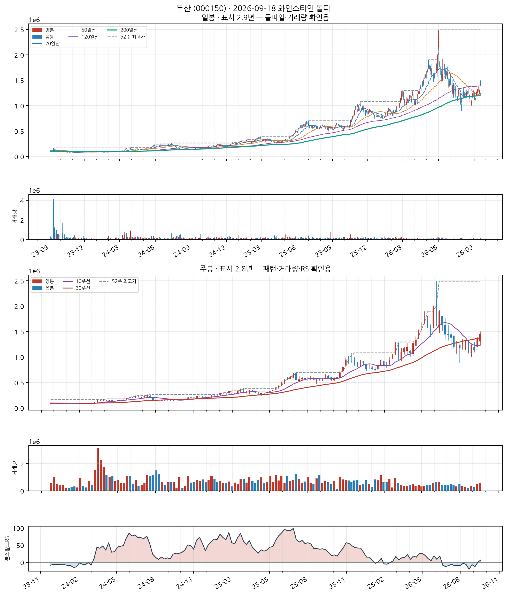
📐 차트 패턴 판정: 후보 없음 후보 없음 판정 기준(PDF)
세 패턴 모두 필수 조건을 채운 후보가 없다(가장 가까운 컵위드핸들 후보: 림 대칭: 좌우 림 차이 26.5% — 오른쪽 림이 낮음, 20% 초과).
가장 강한 반증 컵위드핸들: 림 대칭: 좌우 림 차이 26.5% — 오른쪽 림이 낮음, 20% 초과; 이중바닥: 두 저점 일치: 저점 차이 92.0% — 같은 지지대로 보기 어려움(10% 초과)
경쟁 후보·더 단순한 설명 더 단순한 설명: 최근 26주 상승 추세 지속(+22.2%) — 베이스 없음
추가로 필요한 데이터 장중 고저 기준 깊이(여기 수치는 주봉 종가 기준)
패턴만으로 매수 추천이나 목표 달성 확률을 만들지 않습니다. 수치 기준은 잠정치이며 라벨 데이터로 검증되지 않았습니다.
반도체 제조업
업종 참고: RS 평균 64/99(업종 중 상위 12%) · 오늘 신호 3건 · 업종 평균이 코스닥 대비 +42.7%p(126일), 종목별 편차 ±56%p
🧪 자체 섹터 분류(실험적, 참고용): 아스플로·한솔테크닉스 등 13종목 (업종 혼재)
섹터 내 RS 순위: 3/13위 (RS 94/99)
섹터 1~3위: 아스플로(99), 한솔테크닉스(97), DB하이텍(94)
※ 자체 상관관계 계산(최근 1년) — 검증 시 기준업종 11개 중 8개 정확. 주 단위로 구성종목이 일부 바뀔 수 있음(주간 일치도 실측 0.53)
종가 125,900 · 거래대금 789억
거래량비 2.1x맨스필드RS +7.4
손절 117,087 | 목표 152,339 | 수량 79주
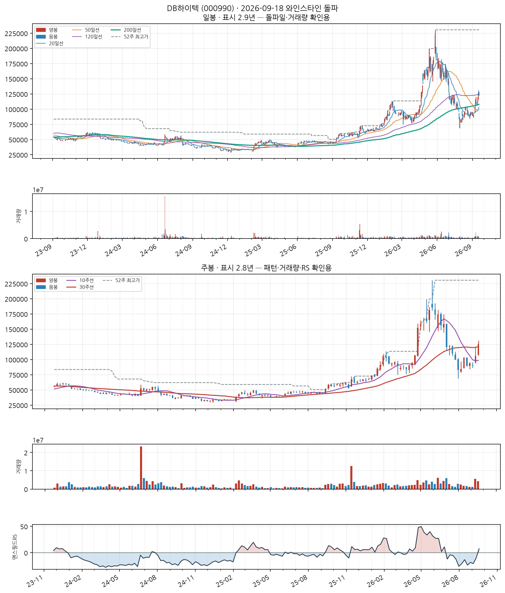
📐 차트 패턴 판정: 이중바닥 형태 완성·미돌파 확신 낮음 판정 기준(PDF)
W 형태는 있으나 중간 고점 185,500를 아직 넘지 못했다.
가장 강한 반증 선행 추세: 선행 추세가 상승(+142.1%) — 상승 중 눌림일 수 있어 반전형 전제가 없다
경쟁 후보·더 단순한 설명 더 단순한 설명: 선행 하락이 없어 반전형이 아니라 상승 추세 중 눌림(조정)일 수 있다
측정표 (주봉 종가 기준, 판정일 2026-09-18 이후 데이터 미사용)
조건별 판정
- 미충족 선행 추세 — 선행 추세가 상승(+142.1%) — 상승 중 눌림일 수 있어 반전형 전제가 없다
- 충족 두 저점 일치 — 저점 차이 0.8% ≤ 6% · 두 번째 저점이 첫 저점을 언더컷(IBD 선호)
- 부분충족 중간 반등 — 중간 반등 123.2% — 30%를 넘어 W가 아니라 독립된 두 파동일 수 있음
- 충족 기간 — 베이스 33주 ≥ 7주
- 충족 깊이 — 베이스 깊이 21.5% ≤ 40%
- 부분충족 저점2 매도 약화 — 저점2 부근 거래량 = 저점1 부근의 1.20배
- 충족 최근성 — 마지막 구조 피벗(2026-07-31)이 7주 전
- 미충족 넥라인 돌파 — 종가가 아직 확인선 위로 안 올라옴(-32.1%)
- 판정불가 돌파 거래량 — 돌파 전
추가로 필요한 데이터 장중 고저 기준 깊이(여기 수치는 주봉 종가 기준)
패턴만으로 매수 추천이나 목표 달성 확률을 만들지 않습니다. 수치 기준은 잠정치이며 라벨 데이터로 검증되지 않았습니다.
1차 철강 제조업
업종 참고: RS 평균 56/99(업종 중 상위 33%) · 오늘 신호 2건 · 업종 평균이 코스피 대비 -32.9%p(126일), 종목별 편차 ±17%p
🧪 자체 섹터 분류(실험적, 참고용): 인피니트헬스케어·케이아이엔엑스 등 24종목 (업종 혼재)
섹터 내 RS 순위: 3/24위 (RS 81/99)
섹터 1~3위: 인피니트헬스케어(96), 케이아이엔엑스(89), 동국산업(81)
※ 자체 상관관계 계산(최근 1년) — 검증 시 기준업종 11개 중 8개 정확. 주 단위로 구성종목이 일부 바뀔 수 있음(주간 일치도 실측 0.53)
종가 3,455 · 거래대금 54억
거래량비 571.1x맨스필드RS +41.0
손절 3,213 | 목표 4,181 | 수량 2,894주
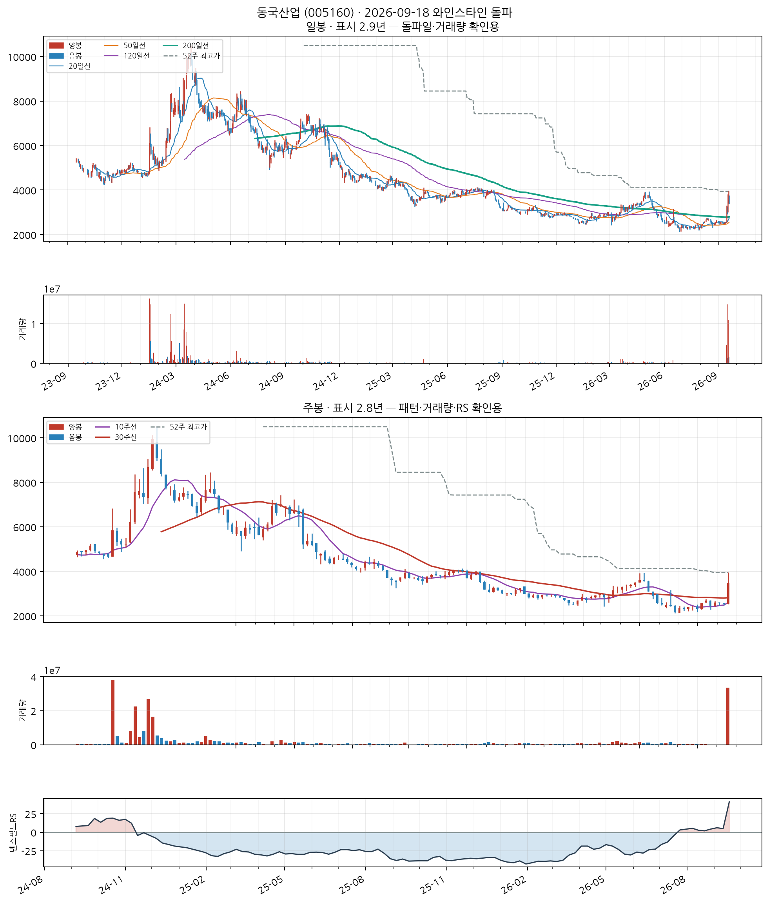
📐 차트 패턴 판정: 컵위드핸들 형성 중 확신 낮음 판정 기준(PDF)
컵 구조(20주·깊이 40.6%)는 있으나 핸들이 아직 없다 — 형성 중.
가장 강한 반증 베이스 거래량 수축: 컵 구간 평균 = 직전 20주 평균의 2.84배
경쟁 후보·더 단순한 설명 더 단순한 설명: 깊이 조건이 약해 단순 횡보·박스로 볼 여지가 있다(컵 깊이 40.6% — 기준 12%~33% 밖(고변동 종목이라 50%까지 예외 허용))
측정표 (주봉 종가 기준, 판정일 2026-09-18 이후 데이터 미사용)
조건별 판정
- 충족 선행 추세 — 선행 상승 +21.2% ≥ +20%
- 충족 기간 — 컵 20주 (기준 7~65주)
- 부분충족 깊이 — 컵 깊이 40.6% — 기준 12%~33% 밖(고변동 종목이라 50%까지 예외 허용)
- 충족 림 대칭 — 좌우 림 차이 4.7% ≤ 12%
- 충족 U자 모양 — 저점이 컵 구간의 40% 지점(중앙 부근)
- 미충족 베이스 거래량 수축 — 컵 구간 평균 = 직전 20주 평균의 2.84배
- 판정불가 핸들 — 오른쪽 림 이후 봉이 없어 핸들 미형성
- 충족 최근성 — 마지막 구조 피벗(2026-09-18)이 0주 전
- 미충족 피벗 돌파 — 종가가 아직 확인선 위로 안 올라옴(+0.0%)
- 판정불가 돌파 거래량 — 돌파 전
추가로 필요한 데이터 장중 고저 기준 깊이(여기 수치는 주봉 종가 기준)
패턴만으로 매수 추천이나 목표 달성 확률을 만들지 않습니다. 수치 기준은 잠정치이며 라벨 데이터로 검증되지 않았습니다.
하이록코리아 (013030)
신규
KOSDAQ
1차 철강 제조업
업종 참고: RS 평균 56/99(업종 중 상위 33%) · 오늘 신호 2건 · 업종 평균이 코스피 대비 -32.9%p(126일), 종목별 편차 ±17%p
🧪 자체 섹터 분류(실험적, 참고용): 하이록코리아·성광벤드 등 19종목 (업종 혼재)
섹터 내 RS 순위: 1/19위 (RS 71/99)
섹터 1~3위: 하이록코리아(71), 성광벤드(62), 지투파워(52)
※ 자체 상관관계 계산(최근 1년) — 검증 시 기준업종 11개 중 8개 정확. 주 단위로 구성종목이 일부 바뀔 수 있음(주간 일치도 실측 0.53)
종가 36,650 · 거래대금 23억
거래량비 2.1x맨스필드RS +21.0
손절 34,084 | 목표 44,346 | 수량 272주
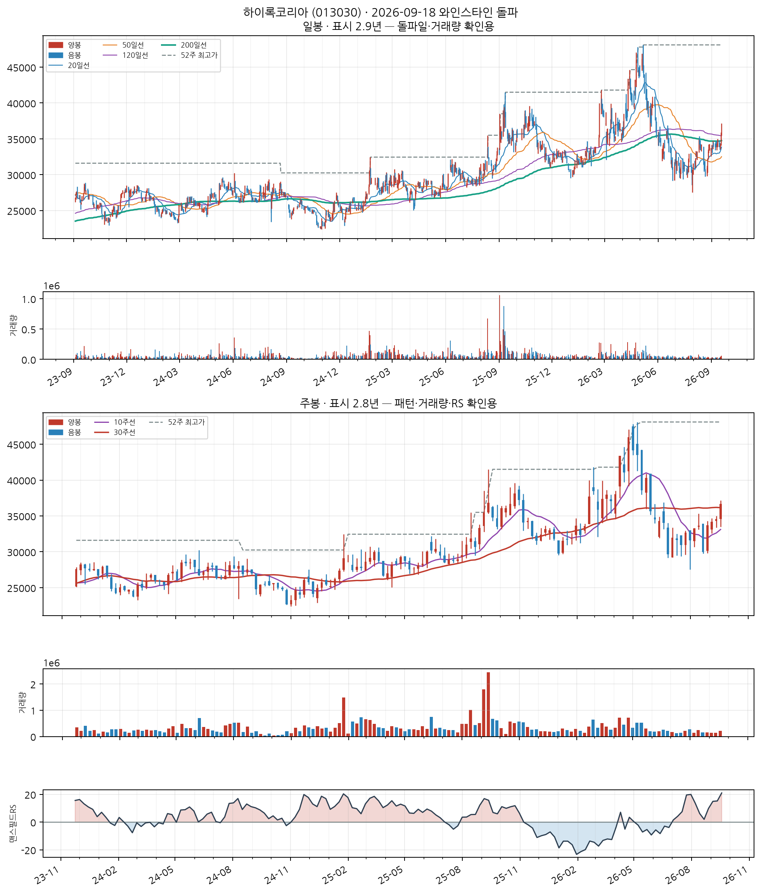
📐 차트 패턴 판정: 이중바닥 돌파 확인 확신 낮음 판정 기준(PDF)
두 저점(29,650/29,950) 뒤 중간 고점 33,650를 종가로 넘었다.
가장 강한 반증 선행 추세: 선행 추세가 상승(+20.6%) — 상승 중 눌림일 수 있어 반전형 전제가 없다
경쟁 후보·더 단순한 설명 컵위드핸들(형성 중·확신 낮음) / 더 단순한 설명: 선행 하락이 없어 반전형이 아니라 상승 추세 중 눌림(조정)일 수 있다
측정표 (주봉 종가 기준, 판정일 2026-09-18 이후 데이터 미사용)
조건별 판정
- 미충족 선행 추세 — 선행 추세가 상승(+20.6%) — 상승 중 눌림일 수 있어 반전형 전제가 없다
- 충족 두 저점 일치 — 저점 차이 1.0% ≤ 6%
- 충족 중간 반등 — 중간 반등 13.5% ≥ 8%
- 충족 기간 — 베이스 21주 ≥ 7주
- 충족 깊이 — 베이스 깊이 35.5% ≤ 40%
- 충족 저점2 매도 약화 — 저점2 부근 거래량 = 저점1 부근의 0.84배
- 충족 최근성 — 돌파 주(2026-08-28)가 3주 전
- 충족 넥라인 돌파 — 2026-08-28 주 종가 33,700 > 확인선 — 돌파 후 3주 경과
- 미충족 돌파 거래량 — 돌파 주 거래량 = 직전 10주 평균의 0.77배 (기준 1.4배)
추가로 필요한 데이터 장중 고저 기준 깊이(여기 수치는 주봉 종가 기준)
패턴만으로 매수 추천이나 목표 달성 확률을 만들지 않습니다. 수치 기준은 잠정치이며 라벨 데이터로 검증되지 않았습니다.
기초 화학물질 제조업
업종 참고: RS 평균 51/99(업종 중 상위 50%) · 오늘 신호 2건 · 업종 평균이 코스피 대비 -33.0%p(126일), 종목별 편차 ±27%p
🧪 자체 섹터 분류(실험적, 참고용): 특수 목적용 기계 제조업 (로보스타·로보티즈 등 24종목)
섹터 내 RS 순위: 6/24위 (RS 44/99)
섹터 1~3위: 로보스타(89), 로보티즈(86), 삼현(70)
※ 자체 상관관계 계산(최근 1년) — 검증 시 기준업종 11개 중 8개 정확. 주 단위로 구성종목이 일부 바뀔 수 있음(주간 일치도 실측 0.53)
종가 26,300 · 거래대금 453억
거래량비 4.7x맨스필드RS +11.6
손절 24,459 | 목표 31,823 | 수량 380주
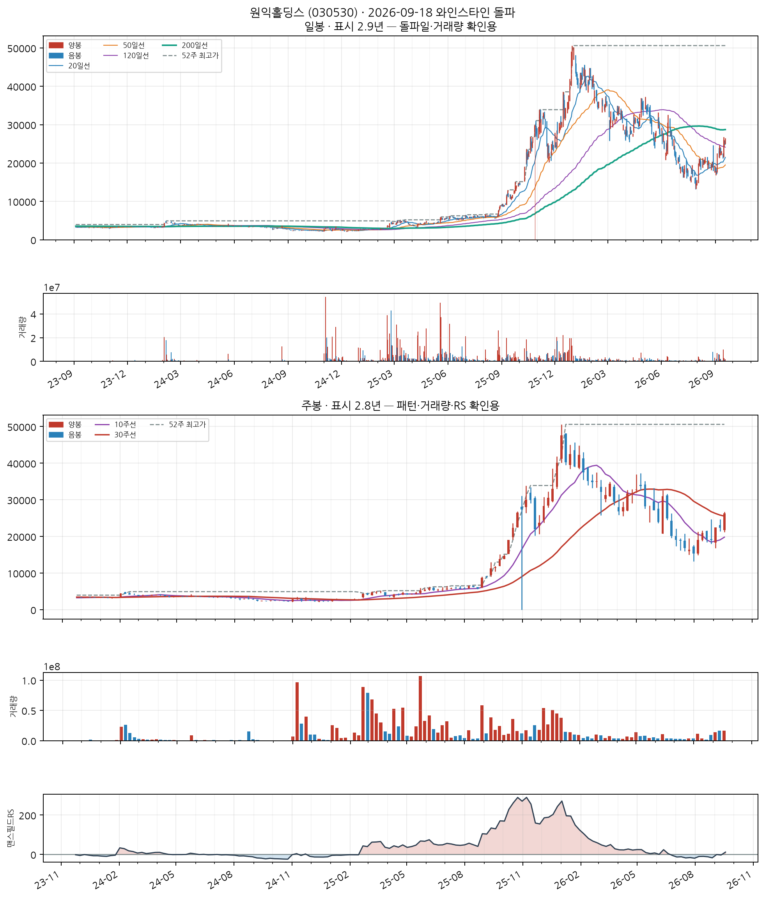
📐 차트 패턴 판정: 후보 없음 후보 없음 판정 기준(PDF)
세 패턴 모두 필수 조건을 채운 후보가 없다(가장 가까운 컵위드핸들 후보: 깊이: 컵 깊이 50.7% — 기준 12%~33%(고변동 최대 50%)를 벗어남).
가장 강한 반증 컵위드핸들: 깊이: 컵 깊이 50.7% — 기준 12%~33%(고변동 최대 50%)를 벗어남; 이중바닥: 두 저점 일치: 저점 차이 36.3% — 같은 지지대로 보기 어려움(10% 초과)
경쟁 후보·더 단순한 설명 더 단순한 설명: 최근 26주 하락 추세 지속(-23.4%) — 베이스 없음
추가로 필요한 데이터 장중 고저 기준 깊이(여기 수치는 주봉 종가 기준)
패턴만으로 매수 추천이나 목표 달성 확률을 만들지 않습니다. 수치 기준은 잠정치이며 라벨 데이터로 검증되지 않았습니다.
반도체 제조업
업종 참고: RS 평균 64/99(업종 중 상위 12%) · 오늘 신호 3건 · 업종 평균이 코스닥 대비 +42.7%p(126일), 종목별 편차 ±56%p
🧪 자체 섹터 분류(실험적, 참고용): 네패스·엑시콘 등 11종목 (업종 혼재)
섹터 내 RS 순위: 1/11위 (RS 90/99)
섹터 1~3위: 네패스(90), 엑시콘(84), 하나마이크론(80)
※ 자체 상관관계 계산(최근 1년) — 검증 시 기준업종 11개 중 8개 정확. 주 단위로 구성종목이 일부 바뀔 수 있음(주간 일치도 실측 0.53)
종가 26,700 · 거래대금 79억
거래량비 3.6x맨스필드RS +47.3
손절 24,831 | 목표 32,307 | 수량 374주
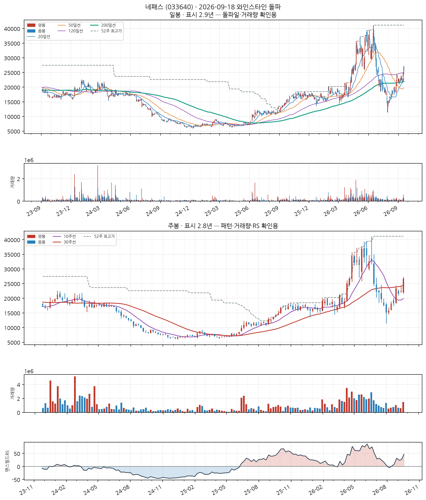
📐 차트 패턴 판정: 후보 없음 후보 없음 판정 기준(PDF)
세 패턴 모두 필수 조건을 채운 후보가 없다(가장 가까운 컵위드핸들 후보: 깊이: 컵 깊이 59.0% — 기준 12%~33%(고변동 최대 50%)를 벗어남).
가장 강한 반증 컵위드핸들: 깊이: 컵 깊이 59.0% — 기준 12%~33%(고변동 최대 50%)를 벗어남; 이중바닥: 두 저점 일치: 저점 차이 57.7% — 같은 지지대로 보기 어려움(10% 초과)
경쟁 후보·더 단순한 설명 더 단순한 설명: 최근 26주 상승 추세 지속(+26.8%) — 베이스 없음
추가로 필요한 데이터 장중 고저 기준 깊이(여기 수치는 주봉 종가 기준)
패턴만으로 매수 추천이나 목표 달성 확률을 만들지 않습니다. 수치 기준은 잠정치이며 라벨 데이터로 검증되지 않았습니다.
상품 중개업
업종 참고: RS 평균 70/99(업종 중 상위 6%) · 오늘 신호 2건 · 업종 평균이 코스피 대비 -12.8%p(126일), 종목별 편차 ±28%p
🧪 자체 섹터 분류(실험적, 참고용): 케이티알파·삼양사 등 6종목 (업종 혼재)
섹터 내 RS 순위: 1/6위 (RS 76/99)
섹터 1~3위: 케이티알파(76), 삼양사(72), 한국자산신탁(54)
※ 자체 상관관계 계산(최근 1년) — 검증 시 기준업종 11개 중 8개 정확. 주 단위로 구성종목이 일부 바뀔 수 있음(주간 일치도 실측 0.53)
종가 4,980 · 거래대금 3.8억
거래량비 3.2x맨스필드RS +14.3
손절 4,631 | 목표 6,026 | 수량 2,008주
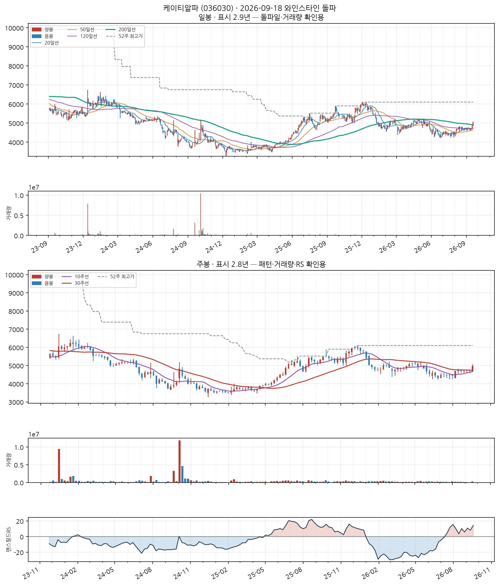
📐 차트 패턴 판정: 이중바닥 형태 완성·미돌파 확신 낮음 판정 기준(PDF)
W 형태는 있으나 중간 고점 5,120를 아직 넘지 못했다.
가장 강한 반증 선행 추세: 선행 추세가 상승(+33.3%) — 상승 중 눌림일 수 있어 반전형 전제가 없다
경쟁 후보·더 단순한 설명 컵위드핸들(형성 중·확신 낮음) / 더 단순한 설명: 선행 하락이 없어 반전형이 아니라 상승 추세 중 눌림(조정)일 수 있다
측정표 (주봉 종가 기준, 판정일 2026-09-18 이후 데이터 미사용)
조건별 판정
- 미충족 선행 추세 — 선행 추세가 상승(+33.3%) — 상승 중 눌림일 수 있어 반전형 전제가 없다
- 부분충족 두 저점 일치 — 저점 차이 8.7% — 6% 초과
- 충족 중간 반등 — 중간 반등 19.1% ≥ 8%
- 충족 기간 — 베이스 40주 ≥ 7주
- 충족 깊이 — 베이스 깊이 28.3% ≤ 40%
- 충족 저점2 매도 약화 — 저점2 부근 거래량 = 저점1 부근의 0.64배
- 충족 최근성 — 마지막 구조 피벗(2026-06-26)이 12주 전
- 미충족 넥라인 돌파 — 종가가 아직 확인선 위로 안 올라옴(-2.7%)
- 판정불가 돌파 거래량 — 돌파 전
추가로 필요한 데이터 장중 고저 기준 깊이(여기 수치는 주봉 종가 기준)
패턴만으로 매수 추천이나 목표 달성 확률을 만들지 않습니다. 수치 기준은 잠정치이며 라벨 데이터로 검증되지 않았습니다.
기타 금융업
업종 참고: RS 평균 57/99(업종 중 상위 25%) · 오늘 신호 8건 · 업종 평균이 코스피 대비 -28.3%p(126일), 종목별 편차 ±26%p
🧪 자체 섹터 분류(실험적, 참고용): 광전자·엑스게이트 등 20종목 (업종 혼재)
섹터 내 RS 순위: 10/20위 (RS 69/99)
섹터 1~3위: 광전자(99), 엑스게이트(98), 대한광통신(97)
※ 자체 상관관계 계산(최근 1년) — 검증 시 기준업종 11개 중 8개 정확. 주 단위로 구성종목이 일부 바뀔 수 있음(주간 일치도 실측 0.53)
종가 11,630 · 거래대금 768억
거래량비 72.1x맨스필드RS +32.0
손절 10,816 | 목표 14,072 | 수량 859주
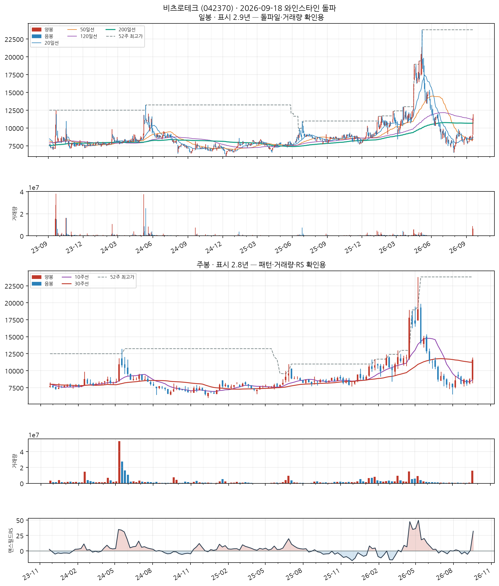
📐 차트 패턴 판정: 이중바닥 형태 완성·미돌파 확신 낮음 판정 기준(PDF)
W 형태는 있으나 중간 고점 19,050를 아직 넘지 못했다.
가장 강한 반증 선행 추세: 선행 추세가 상승(+44.4%) — 상승 중 눌림일 수 있어 반전형 전제가 없다
경쟁 후보·더 단순한 설명 더 단순한 설명: 선행 하락이 없어 반전형이 아니라 상승 추세 중 눌림(조정)일 수 있다
측정표 (주봉 종가 기준, 판정일 2026-09-18 이후 데이터 미사용)
조건별 판정
- 미충족 선행 추세 — 선행 추세가 상승(+44.4%) — 상승 중 눌림일 수 있어 반전형 전제가 없다
- 충족 두 저점 일치 — 저점 차이 4.3% ≤ 6% · 두 번째 저점이 첫 저점을 언더컷(IBD 선호)
- 부분충족 중간 반등 — 중간 반등 151.3% — 30%를 넘어 W가 아니라 독립된 두 파동일 수 있음
- 충족 기간 — 베이스 64주 ≥ 7주
- 충족 깊이 — 베이스 깊이 21.0% ≤ 40%
- 충족 저점2 매도 약화 — 저점2 부근 거래량 = 저점1 부근의 0.47배
- 충족 최근성 — 마지막 구조 피벗(2026-07-31)이 7주 전
- 미충족 넥라인 돌파 — 종가가 아직 확인선 위로 안 올라옴(-39.0%)
- 판정불가 돌파 거래량 — 돌파 전
추가로 필요한 데이터 장중 고저 기준 깊이(여기 수치는 주봉 종가 기준)
패턴만으로 매수 추천이나 목표 달성 확률을 만들지 않습니다. 수치 기준은 잠정치이며 라벨 데이터로 검증되지 않았습니다.
건축기술, 엔지니어링 및 관련 기술 서비스업
업종 참고: RS 평균 47/99(업종 중 상위 62%) · 오늘 신호 1건 · 업종 평균이 코스피 대비 -33.2%p(126일), 종목별 편차 ±32%p
🧪 자체 섹터 분류(실험적, 참고용): 특수 목적용 기계 제조업 (테스·피에스케이홀딩스 등 29종목)
섹터 내 RS 순위: 14/29위 (RS 64/99)
섹터 1~3위: 테스(97), 피에스케이홀딩스(94), GST(94)
※ 자체 상관관계 계산(최근 1년) — 검증 시 기준업종 11개 중 8개 정확. 주 단위로 구성종목이 일부 바뀔 수 있음(주간 일치도 실측 0.53)
종가 31,800 · 거래대금 50억
거래량비 2.4x맨스필드RS +33.3
손절 29,574 | 목표 38,478 | 수량 314주
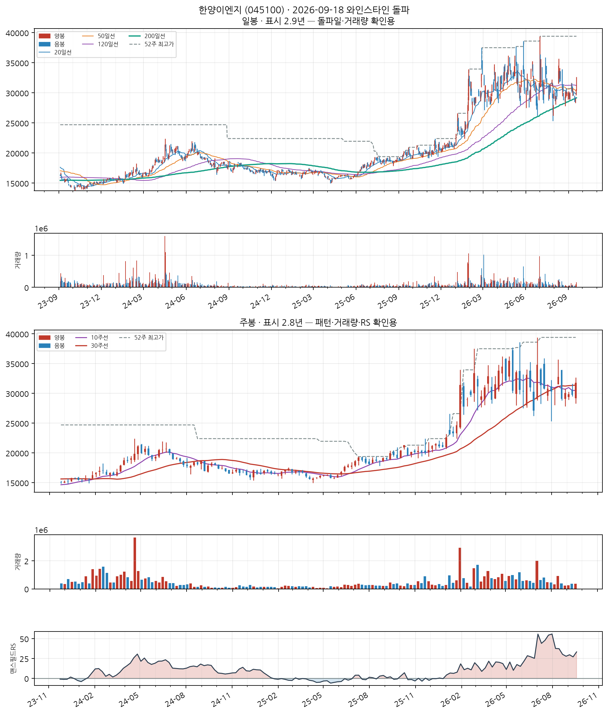
📐 차트 패턴 판정: 후보 없음 후보 없음 판정 기준(PDF)
세 패턴 모두 필수 조건을 채운 후보가 없다(가장 가까운 컵위드핸들 후보: 핸들: 핸들 저점 29,050가 컵 중간값 32,975 아래 — 핸들이 아니라 컵 재하락).
가장 강한 반증 컵위드핸들: 핸들: 핸들 저점 29,050가 컵 중간값 32,975 아래 — 핸들이 아니라 컵 재하락; 이중바닥: 최근성: 마지막 구조 피벗(2026-05-15)이 18주 전 — 기준 12주 이내, 지금 베이스가 아니다
경쟁 후보·더 단순한 설명 더 단순한 설명: 최근 26주 상승 추세 지속(+2.6%) — 베이스 없음
추가로 필요한 데이터 장중 고저 기준 깊이(여기 수치는 주봉 종가 기준)
패턴만으로 매수 추천이나 목표 달성 확률을 만들지 않습니다. 수치 기준은 잠정치이며 라벨 데이터로 검증되지 않았습니다.
전자부품 제조업
업종 참고: RS 평균 53/99(업종 중 상위 43%) · 오늘 신호 9건 · 업종 평균이 코스닥 대비 +32.1%p(126일), 종목별 편차 ±55%p
🧪 자체 섹터 분류(실험적, 참고용): 전자부품 제조업 (삼성전기·삼화콘덴서 등 6종목)
섹터 내 RS 순위: 5/6위 (RS 92/99)
섹터 1~3위: 삼성전기(99), 삼화콘덴서(98), 삼성전기우(98)
※ 자체 상관관계 계산(최근 1년) — 검증 시 기준업종 11개 중 8개 정확. 주 단위로 구성종목이 일부 바뀔 수 있음(주간 일치도 실측 0.53)
종가 16,960 · 거래대금 399억
거래량비 8.4x맨스필드RS +47.4
손절 15,773 | 목표 20,522 | 수량 589주
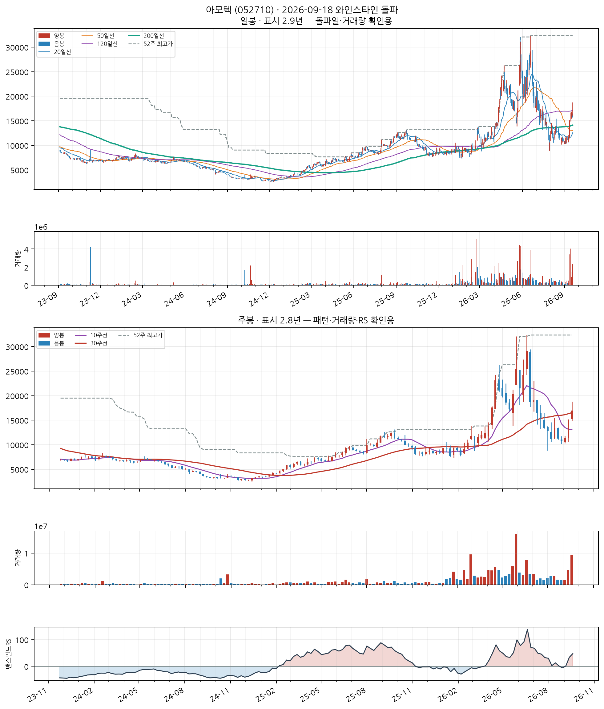
📐 차트 패턴 판정: 후보 없음 후보 없음 판정 기준(PDF)
세 패턴 모두 필수 조건을 채운 후보가 없다(가장 가까운 컵위드핸들 후보: 깊이: 컵 깊이 62.8% — 기준 12%~33%(고변동 최대 50%)를 벗어남).
가장 강한 반증 컵위드핸들: 깊이: 컵 깊이 62.8% — 기준 12%~33%(고변동 최대 50%)를 벗어남; 이중바닥: 두 저점 일치: 저점 차이 37.4% — 같은 지지대로 보기 어려움(10% 초과)
경쟁 후보·더 단순한 설명 더 단순한 설명: 최근 26주 상승 추세 지속(+41.4%) — 베이스 없음
추가로 필요한 데이터 장중 고저 기준 깊이(여기 수치는 주봉 종가 기준)
패턴만으로 매수 추천이나 목표 달성 확률을 만들지 않습니다. 수치 기준은 잠정치이며 라벨 데이터로 검증되지 않았습니다.
소프트웨어 개발 및 공급업
업종 참고: RS 평균 45/99(업종 중 상위 65%) · 오늘 신호 3건 · 업종 평균이 코스닥 대비 +17.1%p(126일), 종목별 편차 ±42%p
🧪 자체 섹터 분류(실험적, 참고용): 소프트웨어 개발 및 공급업 (가비아·에이플러스에셋 등 20종목)
섹터 내 RS 순위: 4/20위 (RS 80/99)
섹터 1~3위: 가비아(93), 에이플러스에셋(87), 더블유게임즈(86)
※ 자체 상관관계 계산(최근 1년) — 검증 시 기준업종 11개 중 8개 정확. 주 단위로 구성종목이 일부 바뀔 수 있음(주간 일치도 실측 0.53)
종가 67,300 · 거래대금 91억
거래량비 7.5x맨스필드RS +28.6
손절 62,589 | 목표 81,433 | 수량 148주
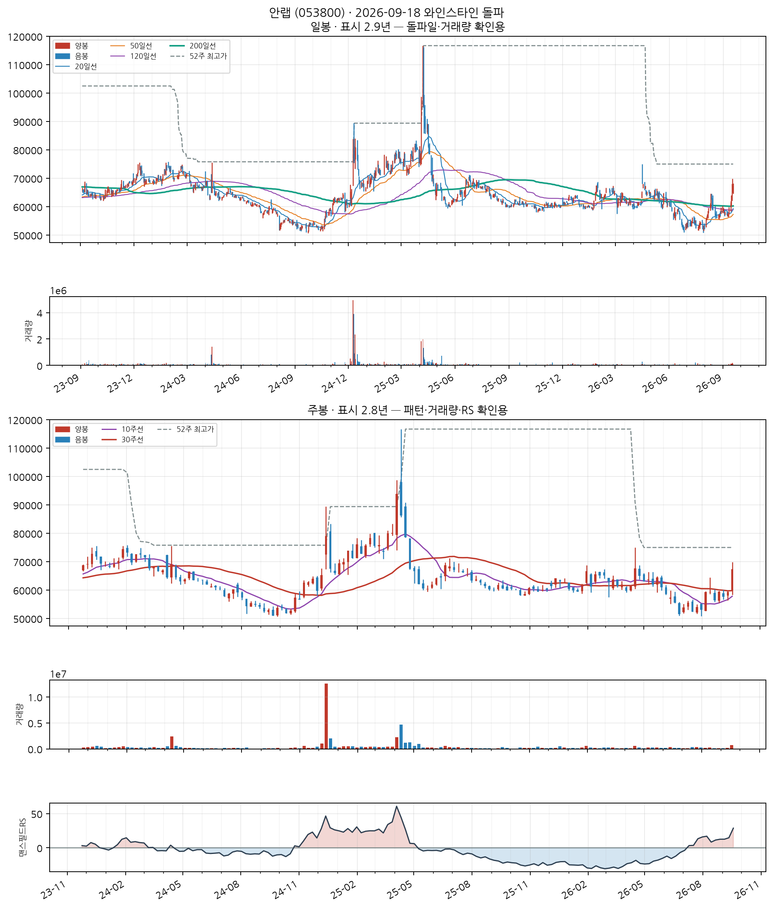
📐 차트 패턴 판정: 컵위드핸들 형성 중 확신 낮음 판정 기준(PDF)
컵 구조(22주·깊이 23.9%)는 있으나 핸들이 아직 없다 — 형성 중.
가장 강한 반증 선행 추세: 선행 상승 +16.3% — +20%에 못 미침
경쟁 후보·더 단순한 설명 없음
측정표 (주봉 종가 기준, 판정일 2026-09-18 이후 데이터 미사용)
조건별 판정
- 부분충족 선행 추세 — 선행 상승 +16.3% — +20%에 못 미침
- 충족 기간 — 컵 22주 (기준 7~65주)
- 충족 깊이 — 컵 깊이 23.9% (기준 12%~33%)
- 충족 림 대칭 — 좌우 림 차이 0.6% ≤ 12%
- 충족 U자 모양 — 저점이 컵 구간의 45% 지점(중앙 부근)
- 부분충족 베이스 거래량 수축 — 컵 구간 평균 = 직전 22주 평균의 1.06배
- 판정불가 핸들 — 오른쪽 림 이후 봉이 없어 핸들 미형성
- 충족 최근성 — 마지막 구조 피벗(2026-09-18)이 0주 전
- 미충족 피벗 돌파 — 종가가 아직 확인선 위로 안 올라옴(+0.0%)
- 판정불가 돌파 거래량 — 돌파 전
추가로 필요한 데이터 장중 고저 기준 깊이(여기 수치는 주봉 종가 기준)
패턴만으로 매수 추천이나 목표 달성 확률을 만들지 않습니다. 수치 기준은 잠정치이며 라벨 데이터로 검증되지 않았습니다.
특수 목적용 기계 제조업
업종 참고: RS 평균 52/99(업종 중 상위 47%) · 오늘 신호 4건 · 업종 평균이 코스닥 대비 +25.8%p(126일), 종목별 편차 ±48%p
🧪 자체 섹터 분류(실험적, 참고용): 키다리스튜디오·탑코미디어 등 16종목 (업종 혼재)
섹터 내 RS 순위: 4/16위 (RS 69/99)
섹터 1~3위: 키다리스튜디오(98), 탑코미디어(97), 슈프리마(75)
※ 자체 상관관계 계산(최근 1년) — 검증 시 기준업종 11개 중 8개 정확. 주 단위로 구성종목이 일부 바뀔 수 있음(주간 일치도 실측 0.53)
종가 28,150 · 거래대금 54억
거래량비 4.8x맨스필드RS +26.5
손절 26,180 | 목표 34,062 | 수량 355주
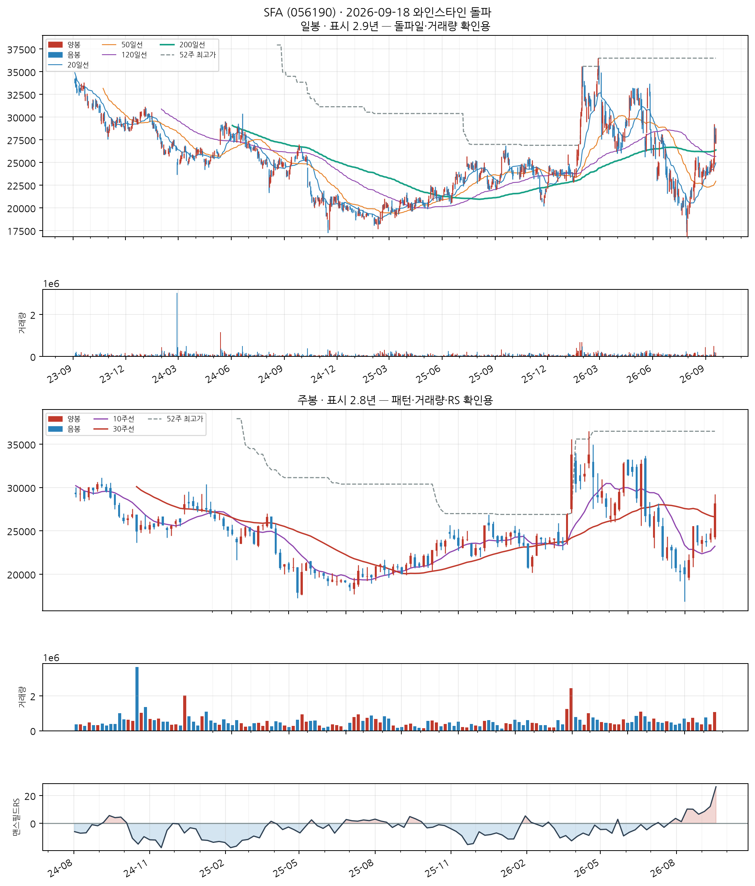
📐 차트 패턴 판정: 컵위드핸들 형성 중 확신 낮음 판정 기준(PDF)
컵 구조(5주·깊이 15.8%)는 있으나 핸들이 아직 없다 — 형성 중.
가장 강한 반증 선행 추세: 선행 추세가 하락(-16.9%) — 지속형 컵의 전제가 없다(라운딩 바텀 가능)
경쟁 후보·더 단순한 설명 더 단순한 설명: 선행 상승이 없어 컵이 아니라 하락 뒤 라운딩 바텀일 수 있다
측정표 (주봉 종가 기준, 판정일 2026-09-18 이후 데이터 미사용)
조건별 판정
- 미충족 선행 추세 — 선행 추세가 하락(-16.9%) — 지속형 컵의 전제가 없다(라운딩 바텀 가능)
- 부분충족 기간 — 컵 5주 — 기준 7~65주 밖(허용 여유 안)
- 충족 깊이 — 컵 깊이 15.8% (기준 12%~33%)
- 충족 림 대칭 — 좌우 림 차이 9.2% ≤ 12%
- 충족 U자 모양 — 저점이 컵 구간의 60% 지점(중앙 부근)
- 부분충족 베이스 거래량 수축 — 컵 구간 평균 = 직전 5주 평균의 1.30배
- 판정불가 핸들 — 오른쪽 림 이후 봉이 없어 핸들 미형성
- 충족 최근성 — 마지막 구조 피벗(2026-09-18)이 0주 전
- 미충족 피벗 돌파 — 종가가 아직 확인선 위로 안 올라옴(+0.0%)
- 판정불가 돌파 거래량 — 돌파 전
추가로 필요한 데이터 장중 고저 기준 깊이(여기 수치는 주봉 종가 기준)
패턴만으로 매수 추천이나 목표 달성 확률을 만들지 않습니다. 수치 기준은 잠정치이며 라벨 데이터로 검증되지 않았습니다.
특수 목적용 기계 제조업
업종 참고: RS 평균 52/99(업종 중 상위 47%) · 오늘 신호 4건 · 업종 평균이 코스닥 대비 +25.8%p(126일), 종목별 편차 ±48%p
🧪 자체 섹터 분류(실험적, 참고용): 피델릭스·주성엔지니어링 등 21종목 (업종 혼재)
섹터 내 RS 순위: 12/21위 (RS 90/99)
섹터 1~3위: 피델릭스(99), 주성엔지니어링(98), 인텍플러스(98)
※ 자체 상관관계 계산(최근 1년) — 검증 시 기준업종 11개 중 8개 정확. 주 단위로 구성종목이 일부 바뀔 수 있음(주간 일치도 실측 0.53)
종가 30,850 · 거래대금 442억
거래량비 2.8x맨스필드RS +39.5
손절 28,690 | 목표 37,328 | 수량 324주
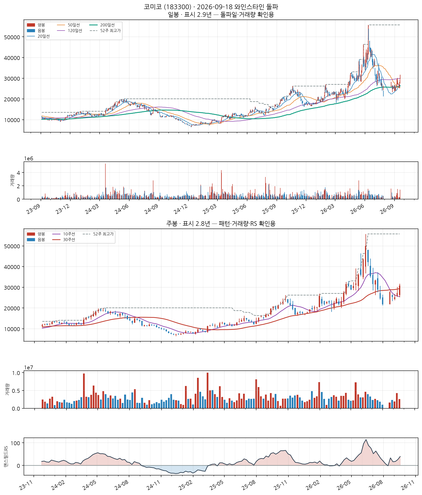
📐 차트 패턴 판정: 이중바닥 형태 완성·미돌파 확신 낮음 판정 기준(PDF)
W 형태는 있으나 중간 고점 50,051를 아직 넘지 못했다.
가장 강한 반증 선행 추세: 선행 추세가 상승(+92.0%) — 상승 중 눌림일 수 있어 반전형 전제가 없다
경쟁 후보·더 단순한 설명 더 단순한 설명: 선행 하락이 없어 반전형이 아니라 상승 추세 중 눌림(조정)일 수 있다
측정표 (주봉 종가 기준, 판정일 2026-09-18 이후 데이터 미사용)
조건별 판정
- 미충족 선행 추세 — 선행 추세가 상승(+92.0%) — 상승 중 눌림일 수 있어 반전형 전제가 없다
- 충족 두 저점 일치 — 저점 차이 0.5% ≤ 6%
- 부분충족 중간 반등 — 중간 반등 130.7% — 30%를 넘어 W가 아니라 독립된 두 파동일 수 있음
- 충족 기간 — 베이스 33주 ≥ 7주
- 충족 깊이 — 베이스 깊이 16.1% ≤ 40%
- 충족 저점2 매도 약화 — 저점2 부근 거래량 = 저점1 부근의 0.12배
- 충족 최근성 — 마지막 구조 피벗(2026-08-07)이 6주 전
- 미충족 넥라인 돌파 — 종가가 아직 확인선 위로 안 올라옴(-38.4%)
- 판정불가 돌파 거래량 — 돌파 전
추가로 필요한 데이터 장중 고저 기준 깊이(여기 수치는 주봉 종가 기준)
패턴만으로 매수 추천이나 목표 달성 확률을 만들지 않습니다. 수치 기준은 잠정치이며 라벨 데이터로 검증되지 않았습니다.
케이엔알시스템 (199430)
신규
KOSDAQ
측정, 시험, 항해, 제어 및 기타 정밀기기 제조업; 광학기기 제외
업종 참고: RS 평균 56/99(업종 중 상위 35%) · 오늘 신호 2건 · 업종 평균이 코스닥 대비 +30.9%p(126일), 종목별 편차 ±44%p
🧪 자체 섹터 분류(실험적, 참고용): 특수 목적용 기계 제조업 (로보스타·로보티즈 등 24종목)
섹터 내 RS 순위: 7/24위 (RS 44/99)
섹터 1~3위: 로보스타(89), 로보티즈(86), 삼현(70)
※ 자체 상관관계 계산(최근 1년) — 검증 시 기준업종 11개 중 8개 정확. 주 단위로 구성종목이 일부 바뀔 수 있음(주간 일치도 실측 0.53)
종가 18,940 · 거래대금 17억
거래량비 3.4x맨스필드RS +2.8
손절 17,614 | 목표 22,917 | 수량 527주
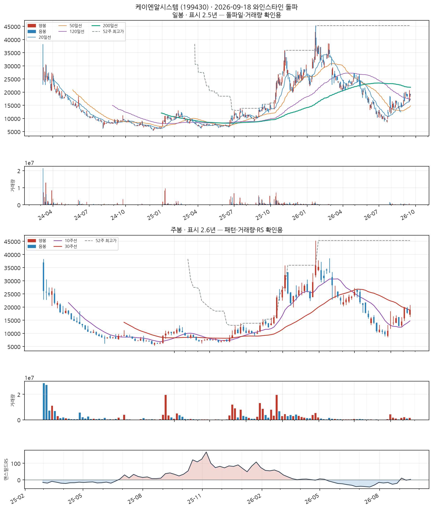
📐 차트 패턴 판정: 후보 없음 후보 없음 판정 기준(PDF)
세 패턴 모두 필수 조건을 채운 후보가 없다(가장 가까운 컵위드핸들 후보: 림 대칭: 좌우 림 차이 27.6% — 오른쪽 림이 낮음, 20% 초과).
가장 강한 반증 컵위드핸들: 림 대칭: 좌우 림 차이 27.6% — 오른쪽 림이 낮음, 20% 초과; 이중바닥: 최근성: 마지막 구조 피벗(2026-04-03)이 24주 전 — 기준 12주 이내, 지금 베이스가 아니다
경쟁 후보·더 단순한 설명 더 단순한 설명: 최근 26주 하락 추세 지속(-21.1%) — 베이스 없음
추가로 필요한 데이터 장중 고저 기준 깊이(여기 수치는 주봉 종가 기준)
패턴만으로 매수 추천이나 목표 달성 확률을 만들지 않습니다. 수치 기준은 잠정치이며 라벨 데이터로 검증되지 않았습니다.
LS에코에너지 (229640)
신규
KOSPI
기타 금융업
업종 참고: RS 평균 57/99(업종 중 상위 25%) · 오늘 신호 8건 · 업종 평균이 코스피 대비 -28.3%p(126일), 종목별 편차 ±26%p
🧪 자체 섹터 분류(실험적, 참고용): 가온전선·KBI메탈 등 19종목 (업종 혼재)
섹터 내 RS 순위: 4/19위 (RS 91/99)
섹터 1~3위: 가온전선(99), KBI메탈(99), 대원전선(98)
※ 자체 상관관계 계산(최근 1년) — 검증 시 기준업종 11개 중 8개 정확. 주 단위로 구성종목이 일부 바뀔 수 있음(주간 일치도 실측 0.53)
종가 60,300 · 거래대금 554억
거래량비 13.6x맨스필드RS +2.6
손절 56,079 | 목표 72,963 | 수량 165주
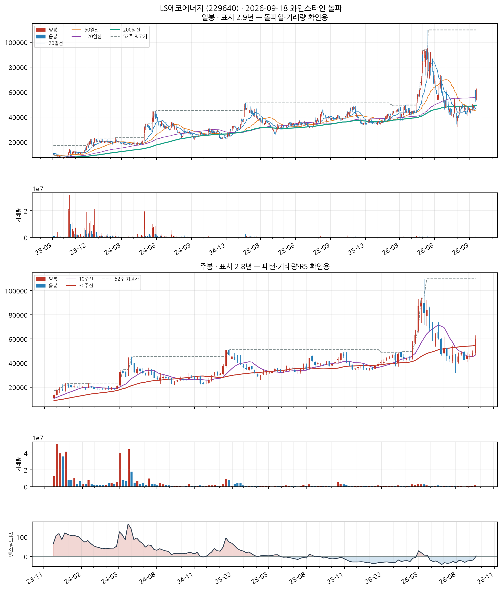
📐 차트 패턴 판정: 후보 없음 후보 없음 판정 기준(PDF)
세 패턴 모두 필수 조건을 채운 후보가 없다(가장 가까운 컵위드핸들 후보: 깊이: 컵 깊이 55.2% — 기준 12%~33%(고변동 최대 50%)를 벗어남).
가장 강한 반증 컵위드핸들: 깊이: 컵 깊이 55.2% — 기준 12%~33%(고변동 최대 50%)를 벗어남; 이중바닥: 두 저점 일치: 저점 차이 14.7% — 같은 지지대로 보기 어려움(10% 초과)
경쟁 후보·더 단순한 설명 더 단순한 설명: 최근 26주 상승 추세 지속(+33.6%) — 베이스 없음
추가로 필요한 데이터 장중 고저 기준 깊이(여기 수치는 주봉 종가 기준)
패턴만으로 매수 추천이나 목표 달성 확률을 만들지 않습니다. 수치 기준은 잠정치이며 라벨 데이터로 검증되지 않았습니다.
전자부품 제조업
업종 참고: RS 평균 53/99(업종 중 상위 43%) · 오늘 신호 9건 · 업종 평균이 코스닥 대비 +32.1%p(126일), 종목별 편차 ±55%p
🧪 자체 섹터 분류(실험적, 참고용): 전자부품 제조업 (도우인시스·디케이티 등 11종목)
섹터 내 RS 순위: 2/11위 (RS 78/99)
섹터 1~3위: 도우인시스(80), 디케이티(78), 비에이치(59)
※ 자체 상관관계 계산(최근 1년) — 검증 시 기준업종 11개 중 8개 정확. 주 단위로 구성종목이 일부 바뀔 수 있음(주간 일치도 실측 0.53)
종가 21,250 · 거래대금 186억
거래량비 2.2x맨스필드RS +61.6
손절 19,762 | 목표 25,712 | 수량 470주
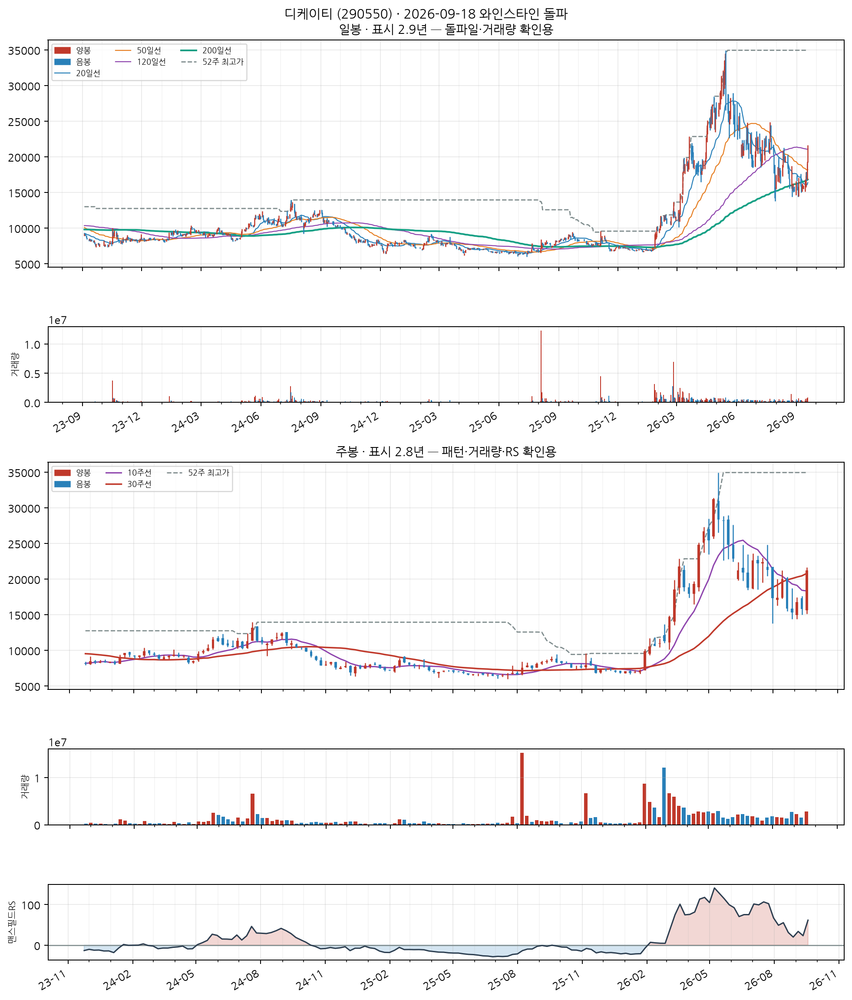
📐 차트 패턴 판정: 이중바닥 형태 완성·미돌파 확신 낮음 판정 기준(PDF)
W 형태는 있으나 중간 고점 31,200를 아직 넘지 못했다.
가장 강한 반증 선행 추세: 선행 추세가 상승(+147.4%) — 상승 중 눌림일 수 있어 반전형 전제가 없다
경쟁 후보·더 단순한 설명 컵위드핸들(형성 중·확신 중간) / 더 단순한 설명: 선행 하락이 없어 반전형이 아니라 상승 추세 중 눌림(조정)일 수 있다
측정표 (주봉 종가 기준, 판정일 2026-09-18 이후 데이터 미사용)
조건별 판정
- 미충족 선행 추세 — 선행 추세가 상승(+147.4%) — 상승 중 눌림일 수 있어 반전형 전제가 없다
- 충족 두 저점 일치 — 저점 차이 4.7% ≤ 6%
- 부분충족 중간 반등 — 중간 반등 74.0% — 30%를 넘어 W가 아니라 독립된 두 파동일 수 있음
- 충족 기간 — 베이스 26주 ≥ 7주
- 충족 깊이 — 베이스 깊이 17.8% ≤ 40%
- 충족 저점2 매도 약화 — 저점2 부근 거래량 = 저점1 부근의 0.75배
- 충족 최근성 — 마지막 구조 피벗(2026-06-26)이 12주 전
- 미충족 넥라인 돌파 — 종가가 아직 확인선 위로 안 올라옴(-31.9%)
- 판정불가 돌파 거래량 — 돌파 전
추가로 필요한 데이터 장중 고저 기준 깊이(여기 수치는 주봉 종가 기준)
패턴만으로 매수 추천이나 목표 달성 확률을 만들지 않습니다. 수치 기준은 잠정치이며 라벨 데이터로 검증되지 않았습니다.
자동차 신품 부품 제조업
업종 참고: RS 평균 45/99(업종 중 상위 67%) · 오늘 신호 1건 · 업종 평균이 코스피 대비 -40.2%p(126일), 종목별 편차 ±19%p
🧪 자체 섹터 분류(실험적, 참고용): 특수 목적용 기계 제조업 (로보스타·로보티즈 등 24종목)
섹터 내 RS 순위: 3/24위 (RS 70/99)
섹터 1~3위: 로보스타(89), 로보티즈(86), 삼현(70)
※ 자체 상관관계 계산(최근 1년) — 검증 시 기준업종 11개 중 8개 정확. 주 단위로 구성종목이 일부 바뀔 수 있음(주간 일치도 실측 0.53)
종가 51,000 · 거래대금 323억
거래량비 5.6x맨스필드RS +35.0
손절 47,430 | 목표 61,710 | 수량 196주
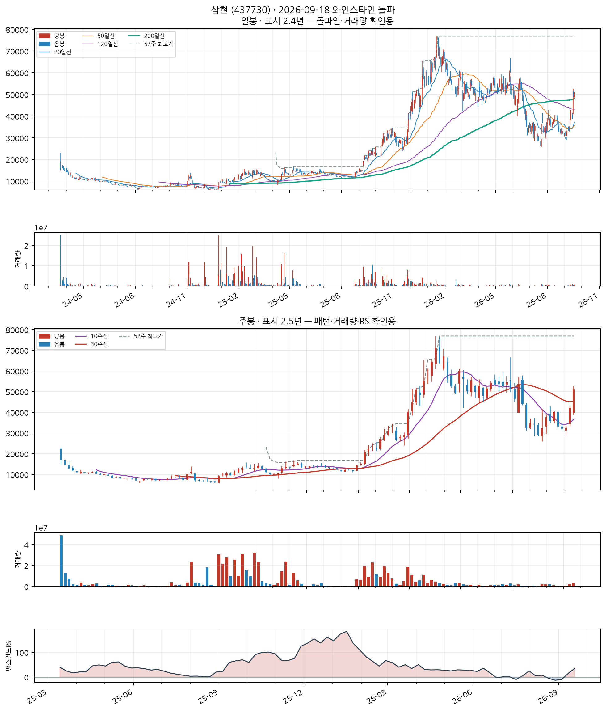
📐 차트 패턴 판정: 후보 없음 후보 없음 판정 기준(PDF)
세 패턴 모두 필수 조건을 채운 후보가 없다(가장 가까운 컵위드핸들 후보: 깊이: 컵 깊이 51.7% — 기준 12%~33%(고변동 최대 50%)를 벗어남).
가장 강한 반증 컵위드핸들: 깊이: 컵 깊이 51.7% — 기준 12%~33%(고변동 최대 50%)를 벗어남; 이중바닥: 두 저점 일치: 저점 차이 41.0% — 같은 지지대로 보기 어려움(10% 초과)
경쟁 후보·더 단순한 설명 더 단순한 설명: 최근 26주 하락 추세 지속(-8.1%) — 베이스 없음
추가로 필요한 데이터 장중 고저 기준 깊이(여기 수치는 주봉 종가 기준)
패턴만으로 매수 추천이나 목표 달성 확률을 만들지 않습니다. 수치 기준은 잠정치이며 라벨 데이터로 검증되지 않았습니다.
전자부품 제조업
업종 참고: RS 평균 53/99(업종 중 상위 43%) · 오늘 신호 9건 · 업종 평균이 코스닥 대비 +32.1%p(126일), 종목별 편차 ±55%p
🧪 자체 섹터 분류(실험적, 참고용): 전자부품 제조업 (도우인시스·디케이티 등 11종목)
섹터 내 RS 순위: 4/11위 (RS 49/99)
섹터 1~3위: 도우인시스(80), 디케이티(78), 비에이치(59)
※ 자체 상관관계 계산(최근 1년) — 검증 시 기준업종 11개 중 8개 정확. 주 단위로 구성종목이 일부 바뀔 수 있음(주간 일치도 실측 0.53)
종가 9,040 · 거래대금 70억
거래량비 5.2x맨스필드RS +13.7
손절 8,407 | 목표 10,938 | 수량 1,106주
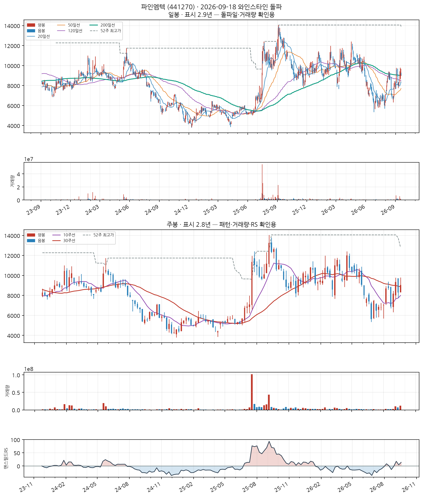
📐 차트 패턴 판정: 후보 없음 후보 없음 판정 기준(PDF)
세 패턴 모두 필수 조건을 채운 후보가 없다(가장 가까운 컵위드핸들 후보: 림 대칭: 좌우 림 차이 22.1% — 오른쪽 림이 낮음, 20% 초과).
가장 강한 반증 컵위드핸들: 림 대칭: 좌우 림 차이 22.1% — 오른쪽 림이 낮음, 20% 초과; 이중바닥: 두 저점 일치: 저점 차이 34.3% — 같은 지지대로 보기 어려움(10% 초과)
경쟁 후보·더 단순한 설명 더 단순한 설명: 최근 26주 하락 추세 지속(-21.8%) — 베이스 없음
추가로 필요한 데이터 장중 고저 기준 깊이(여기 수치는 주봉 종가 기준)
패턴만으로 매수 추천이나 목표 달성 확률을 만들지 않습니다. 수치 기준은 잠정치이며 라벨 데이터로 검증되지 않았습니다.
아이씨티케이 (456010)
신규
KOSDAQ
반도체 제조업
업종 참고: RS 평균 64/99(업종 중 상위 12%) · 오늘 신호 3건 · 업종 평균이 코스닥 대비 +42.7%p(126일), 종목별 편차 ±56%p
🧪 자체 섹터 분류(실험적, 참고용): 광전자·엑스게이트 등 20종목 (업종 혼재)
섹터 내 RS 순위: 5/20위 (RS 94/99)
섹터 1~3위: 광전자(99), 엑스게이트(98), 대한광통신(97)
※ 자체 상관관계 계산(최근 1년) — 검증 시 기준업종 11개 중 8개 정확. 주 단위로 구성종목이 일부 바뀔 수 있음(주간 일치도 실측 0.53)
종가 22,350 · 거래대금 477억
거래량비 7.5x맨스필드RS +47.9
손절 20,786 | 목표 27,044 | 수량 447주
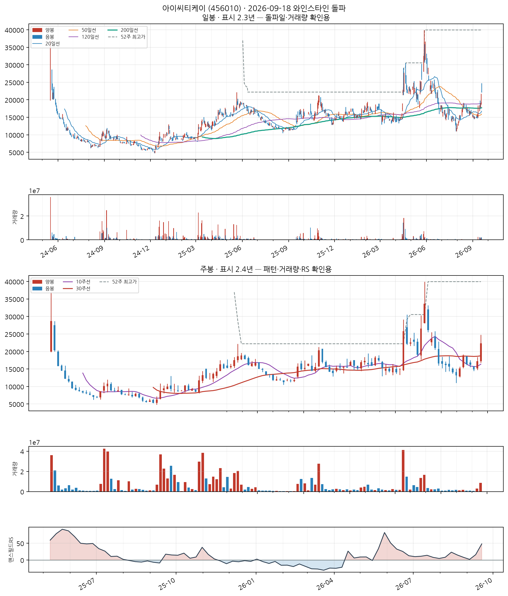
📐 차트 패턴 판정: 역헤드앤숄더 돌파 확인 확신 낮음 판정 기준(PDF)
세 저점(머리 13,130) 뒤 넥라인(13,441, 2026-09-11)을 종가로 넘었다.
가장 강한 반증 선행 추세: 선행 추세가 상승(+22.9%) — 상승 중 눌림일 수 있어 반전형 전제가 없다
경쟁 후보·더 단순한 설명 컵위드핸들(형성 중·확신 낮음) / 더 단순한 설명: 선행 하락이 없어 반전형이 아니라 상승 추세 중 눌림(조정)일 수 있다
측정표 (주봉 종가 기준, 판정일 2026-09-18 이후 데이터 미사용)
조건별 판정
- 미충족 선행 추세 — 선행 추세가 상승(+22.9%) — 상승 중 눌림일 수 있어 반전형 전제가 없다
- 충족 머리 깊이 — 양 어깨 대비 최소 11.7% ≥ 3.5%
- 부분충족 어깨 대칭 — 어깨 높이차 22.1% — 15% 초과
- 충족 기간 — 어깨 간 16주 ≥ 6주
- 부분충족 시간 대칭 — 머리 좌우 기간 비 0.45 — 한쪽으로 치우침
- 미충족 넥라인 기울기 — 주당 -4.0% — 구조 불안정
- 부분충족 오른쪽 어깨 매도 약화 — 오른쪽 어깨 부근 거래량 = 머리 부근의 1.15배
- 충족 최근성 — 돌파 주(2026-09-11)가 1주 전
- 충족 넥라인 돌파 — 2026-09-11 주 종가 17,200 > 확인선 — 돌파 후 1주 경과
- 충족 돌파 거래량 — 돌파 주 거래량 = 직전 10주 평균의 2.60배
추가로 필요한 데이터 장중 고저 기준 깊이(여기 수치는 주봉 종가 기준)
패턴만으로 매수 추천이나 목표 달성 확률을 만들지 않습니다. 수치 기준은 잠정치이며 라벨 데이터로 검증되지 않았습니다.
전자부품 제조업
업종 참고: RS 평균 53/99(업종 중 상위 43%) · 오늘 신호 9건 · 업종 평균이 코스닥 대비 +32.1%p(126일), 종목별 편차 ±55%p
🧪 자체 섹터 분류(실험적, 참고용): 전자부품 제조업 (도우인시스·디케이티 등 11종목)
섹터 내 RS 순위: 1/11위 (RS 80/99)
섹터 1~3위: 도우인시스(80), 디케이티(78), 비에이치(59)
※ 자체 상관관계 계산(최근 1년) — 검증 시 기준업종 11개 중 8개 정확. 주 단위로 구성종목이 일부 바뀔 수 있음(주간 일치도 실측 0.53)
종가 22,800 · 거래대금 47억
거래량비 4.8x맨스필드RS +19.2
손절 21,204 | 목표 27,588 | 수량 438주
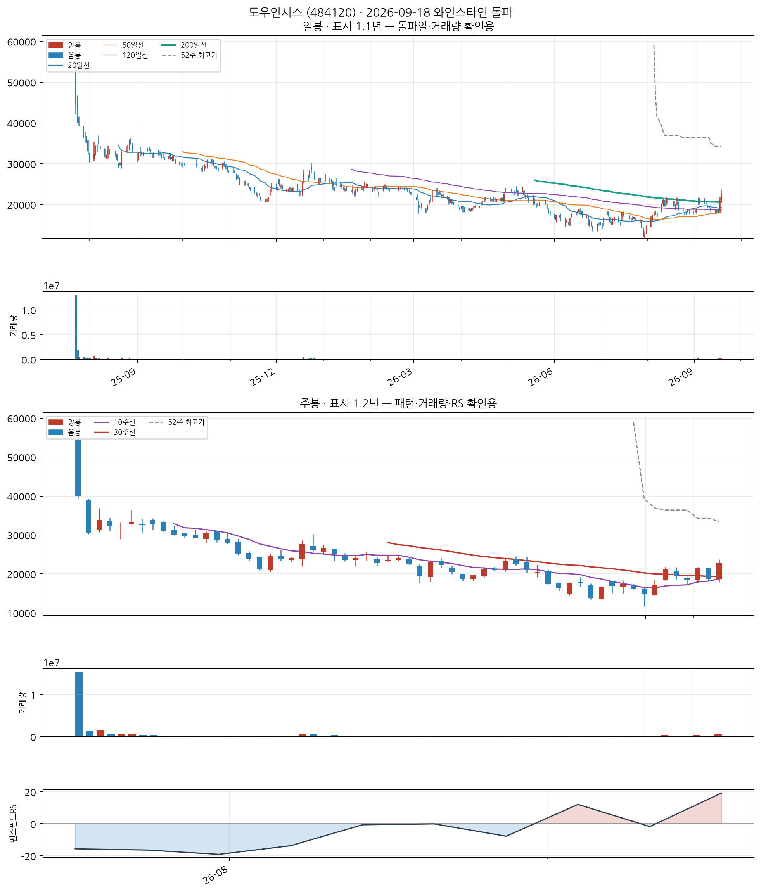
📐 차트 패턴 판정: 컵위드핸들 형성 중 확신 낮음 판정 기준(PDF)
컵 구조(20주·깊이 40.1%)는 있으나 핸들이 아직 없다 — 형성 중.
가장 강한 반증 선행 추세: 선행 추세가 하락(-16.7%) — 지속형 컵의 전제가 없다(라운딩 바텀 가능)
경쟁 후보·더 단순한 설명 더 단순한 설명: 선행 상승이 없어 컵이 아니라 하락 뒤 라운딩 바텀일 수 있다
측정표 (주봉 종가 기준, 판정일 2026-09-18 이후 데이터 미사용)
조건별 판정
- 미충족 선행 추세 — 선행 추세가 하락(-16.7%) — 지속형 컵의 전제가 없다(라운딩 바텀 가능)
- 충족 기간 — 컵 20주 (기준 7~65주)
- 부분충족 깊이 — 컵 깊이 40.1% — 기준 12%~33% 밖(고변동 종목이라 50%까지 예외 허용)
- 충족 림 대칭 — 좌우 림 차이 1.7% ≤ 12%
- 충족 U자 모양 — 저점이 컵 구간의 40% 지점(중앙 부근)
- 충족 베이스 거래량 수축 — 컵 구간 평균 = 직전 20주 평균의 0.85배
- 판정불가 핸들 — 오른쪽 림 이후 봉이 없어 핸들 미형성
- 충족 최근성 — 마지막 구조 피벗(2026-09-18)이 0주 전
- 미충족 피벗 돌파 — 종가가 아직 확인선 위로 안 올라옴(+0.0%)
- 판정불가 돌파 거래량 — 돌파 전
추가로 필요한 데이터 장중 고저 기준 깊이(여기 수치는 주봉 종가 기준)
패턴만으로 매수 추천이나 목표 달성 확률을 만들지 않습니다. 수치 기준은 잠정치이며 라벨 데이터로 검증되지 않았습니다.